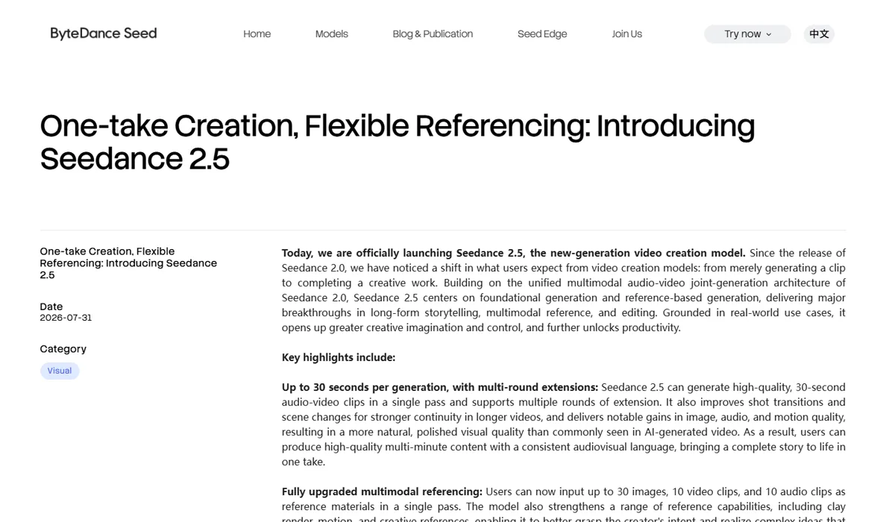

字节跳动字节跳动 · ByteDance Seed
字节是视频生成的头部玩家：Seedance 单次生成 30 秒、参考素材最多 50 份，第三方盲测和清华大学的推理基准都排在前列；背后有豆包、即梦、剪映、CapCut 组成的分发网络。短板是图像排名在第二梯队、视频价格偏高，以及 Seedance 2.0 引发的好莱坞版权风波。
一页结论
- 视频第一梯队：Seedance 2.5 盲测榜第 5；清华大学的 WorldReasonBench 中 Seedance 2.0 综合第一，人工评分高于 Veo 3.1-Fast、可灵和 Wan 2.6S1S7
- 控制能力最强的一批：一次可放 30 张图、10 段视频、10 段音频做参考，支持按时间点局部修改音视频和镜头；图像端 Seedream 5.0 Pro 能把一张海报拆成 10 多个可编辑图层S3S8
- 分发网络完整：豆包（月活 4.19 亿）、即梦、剪映 / CapCut、小云雀（Pippit）、火山引擎与 BytePlus 同时覆盖个人、创作者、中小商家和企业S6S9S10
- 价格两极：图像每张 0.12–0.60 元，和 Google 同档；视频 Seedance 2.5 在盲测榜前 15 里每分钟价格最高S1S5
- 版权与肖像风波：Seedance 2.0 发布后，迪士尼发停止侵权函、美国电影协会公开谴责、两名美国参议员致信要求关停；国内则因“仅凭照片生成相似声音”暂停了真人参考S11S12
01公司介绍
02公司战略
字节的主线是“视频优先、控制取胜、全渠道分发”：把模型能力做成创作者能精细控制的工具，再通过自家内容和工具产品放大。
- 视频优先：Seedance 2.0（2026 年 2 月）引爆讨论，2.5（7 月 31 日）把单次生成从 15 秒拉到 30 秒，并支持多次延长，Beta 长视频模式最长约 3 分钟S3S11
- 用“参考”和“局部修改”换取可控性：2.5 一次可放 50 份参考素材，并能按时间点修改音视频、换镜头而保持人物动作不变S3
- 图像走向设计生产：Seedream 5.0 Pro（7 月 8 日）主打图层拆分、点选 / 套索 / 框选局部编辑和 10 多种语言的文字渲染S8
- 全产品线接入：Seedance 2.5 首发即梦与豆包；小云雀（Pippit）在 2026 年接入 Seedance 2.0 并推出“短剧 Agent”S3S10
- 提价：据人人都是产品经理转引的数据，即梦在 2026 年初连续三轮涨价，会员从 69 元档涨到 199、499 元档S13
03定位与竞争
一句话定位：为短视频创作者、短剧团队、中小商家和企业，在内容生产与营销场景中，提供可精细控制、能直接成片的视频与图像生成，并嵌在字节已有的内容工具里。
| 目标用户 | 主要入口 | 依据 |
|---|---|---|
| 普通用户 | 豆包 App | 豆包月活 4.19 亿，已接入 Seedance 2.5S3S6 |
| 内容创作者与短剧团队 | 即梦、剪映 / CapCut | 即梦官网推出“短剧工作室”；即梦 2026 年 6 月月活约 1,633 万（转引 QuestMobile）S9S13 |
| 中小商家与营销团队 | 小云雀（Pippit） | 面向中小企业和社媒创作者的 AI 内容平台，接入 Seedance 2.0S10 |
| 开发者与企业 | 火山引擎（国内）、BytePlus ModelArk（海外） | 按张、按 token 计费S5 |
| 竞品角色 | 对象 | 为什么 |
|---|---|---|
| 核心竞品（视频） | 快手可灵、阿里 Wan、MiniMax 海螺 | 同为国内头部，盲测榜上 Wan 3.0 和 MiniMax H3 排在 Seedance 2.5 前面S1 |
| 核心竞品（视频，海外） | Google Gemini Omni | WorldReasonBench 中 Seedance 2.0 高于 Veo 3.1-Fast；早期测试者认为 Seedance 2 比 Omni 更连贯S7S14 |
| 核心竞品（图像） | Google Nano Banana、阿里 Qwen-Image | Decrypt 对比中 Seedream 在价格和多轮编辑一致性上胜过 Nano Banana 2S15 |
| 间接竞品 | 美图、Canva 等设计工具 | Seedream 5.0 Pro 的图层拆分直接面向设计生产 |
04产品与模型矩阵
| 类别 | 模型 / 产品 | 定位 | 状态（2026-11） |
|---|---|---|---|
| 视频 | Seedance 2.5 | 单次 30 秒、可多次延长；50 份参考；按时间点编辑音视频 | 即梦、豆包可用；火山方舟已列价S3S5 |
| 视频 | Seedance 2.0 / Fast / Mini | 上一代主力，支持到 4K；Fast、Mini 为低价档 | 可用S5 |
| 视频 | Seedance 1.0 Pro / Pro Fast | 早期模型，支持离线推理 | 可用S5 |
| 图像 | Seedream 5.0 Pro | 旗舰：图层拆分、局部编辑、多语言文字 | 7 月 8 日发布S8 |
| 图像 | Seedream 5.0 / Lite / Flash、4.5、4.0 | 不同价格档 | 可用S5 |
| 3D | Seed3D 1.0 | 从单张图片生成可用于仿真的 3D 资产 | 2025 年 10 月发布，可通过火山引擎调用S16 |
| 产品 | 即梦 AI | 生图、视频、短剧工作室、智能画布 | 可用S9 |
| 产品 | 豆包 App | 对话中生图、生视频 | 可用S3 |
| 产品 | 小云雀（Pippit） | 面向中小企业的 AI 内容平台，含短剧 Agent | 2025 年 5 月上线S10 |
对话式
- 豆包 App 里直接生图、生成 Seedance 视频S3
创作工具
- 即梦提供文生图、视频生成、短剧工作室和智能画布；剪映 / CapCut 负责剪辑S9
Agent 与工作流
- 小云雀的短剧 Agent 可把最长 10 万字的剧本变成成片S10

05生成能力与可控性
视频的长度、参考和编辑能力领先，第三方排名在第一梯队；图像以设计生产为特色，但盲测排名在第二梯队。
| 能力 | 视频（Seedance 2.5） | 图像（Seedream 5.0 Pro） |
|---|---|---|
| 分辨率 | 火山方舟列出 480p、720p、1080p（2.0 另支持 4K）S5 | 两档计价：≤261 万像素、>261 万像素S5 |
| 长度 | 单次 30 秒，可多次延长；Beta 长视频模式最长约 3 分钟S3S11 | — |
| 参考输入 | 一次最多 30 张图、10 段视频、10 段音频S3 | 多图融合；输入图首张免费S5S8 |
| 编辑 | 按时间点修改音视频；绿幕、换视角、参考编辑S3 | 点选、套索、框选、手绘草图驱动局部修改；换色、换材质、增删物体S8 |
| 镜头控制 | 可指定某段时间的镜头角度、运动和节奏；可用白模渲染指定机位路径S3 | — |
| 音频 | 音视频联合生成，口型与声音同步S3 | — |
| 文字渲染 | — | 中英文及法、德、俄、日、韩、西、阿拉伯等 10 多种语言S8 |
| 设计输出 | — | 可拆成 10 多个带透明度的独立图层S8 |
| 官方承认的不足 | 复杂动作的物理合理性仍有提升空间S3 | 更细粒度的文字渲染与像素级编辑一致性仍有提升空间S8 |
第三方评测怎么说
| 评测方 | 时间 | 对比对象 | 结论 |
|---|---|---|---|
| 清华大学 WorldReasonBench（The Decoder 报道） | 2026-05-16 | 5 个商用 + 6 个开源视频模型的世界推理能力 | Seedance 2.0 综合第一（39.8 分），人工评分高于 Veo 3.1-Fast、可灵、Wan 2.6；但所有模型在逻辑推理上都表现最差，画面好看不等于理解世界S7 |
| Decrypt（Jose Antonio Lanz） | 2026-03-03 | Seedream 5.0 Lite vs Nano Banana 2 | Seedream 胜在价格、扩图准确度和多轮编辑中的人物一致性，作者称其“在每项测试中都保持得更好”；Nano Banana 胜在文字渲染和速度S15 |
| Android Authority 转述 Reddit 测试者 | 2026-05-12 | Seedance 2 vs Gemini Omni 早期版本 | 同一个吃意面的提示词，Seedance 2 的结果更连贯，但画面有抖动S14 |
| The Decoder（Gregor Kobsik） | 2026-08-01 | Seedance 2.5 发布 | 目前只有字节自己的短片作为展示，尚无独立基准测试S4 |
Seedance 2.5 发布约三个月，尚未找到合格的独立对比评测；转售该模型的平台和推广付费课程的“评测”未采用。
评测共识：视频在连贯性和世界推理上处在第一梯队；图像在多轮编辑的人物一致性上有优势，但整体盲测排名落后 OpenAI 和 Google；2.5 的提升目前主要来自官方展示，独立验证不足。
06解决方案与场景
07商业模式与价格
三条收费线：即梦等产品的会员与积分、豆包的免费入口带动用户，以及火山引擎和 BytePlus 的 API。
| 模型 | 价格（人民币） |
|---|---|
| Seedream 5.0 Pro | ≤261 万像素 0.30 元 / 张；>261 万像素 0.60 元 / 张；图层拆分 0.15 / 0.30 元 |
| Seedream 5.0 Flash / Lite | 0.12 / 0.22 元 / 张 |
| Seedream 4.5 / 4.0 | 0.25 / 0.20 元 / 张 |
| Seedance 2.5 | 480p 0.67 元 / 秒；720p 1.51 元 / 秒；1080p 3.74 元 / 秒 |
| Seedance 2.0 | 720p 0.99 元 / 秒；1080p 2.48 元 / 秒；4K 5.05 元 / 秒 |
| Seedance 2.0 Mini | 720p 0.50 元 / 秒 |
火山方舟官方参考价，2026-11-04 访问；视频按秒价格为官方 5 秒示例换算，不含视频输入，实际按 token 计费。来源：S5
| 任务 | 用什么 | 估算成本 |
|---|---|---|
| 一张标准尺寸商品图 | Seedream 5.0 Pro | 0.30 元 |
| 一张高分辨率海报 | Seedream 5.0 Pro | 0.60 元 |
| 一条 8 秒 720p 短视频 | Seedance 2.5 / 2.0 / 2.0 Mini | 约 12.1 / 7.9 / 4.0 元 |
| 一条 30 秒 720p 视频 | Seedance 2.5 | 约 45 元 |
按官方参考价换算，未含失败重试与修改。来源：S5
产品侧：即梦会员档位在 2026 年初从 69 元提高到 199 元、499 元；有报道称 15 秒视频的生成成本从 0.65 元涨到最高 5.03 元（人人都是产品经理作者文章，C 级来源）S13。
08上下游与渠道
09用户、客户与收入
10用户口碑与容错设计
正面评价
11版权与合规
- 好莱坞抗议：2026 年 2 月 13 日，美国电影协会谴责 Seedance 2.0 侵犯版权，迪士尼发出停止侵权函；2 月 15 日派拉蒙指控其“公然侵权”；3 月 16 日两名美国参议员致信字节 CEO 梁汝波，要求关停 SeedanceS11
- 字节回应：2 月 16 日表示尊重知识产权，将加强防护措施S11
- 真人与声音：2 月 9 日即梦暂停接受真人图片或视频作为主体参考；此后 App 内需活体验证才能使用真人形象S12
- 国内标识法规：《人工智能生成合成内容标识办法》自 2025 年 9 月 1 日起施行，要求服务提供者对生成内容添加显式标识和文件元数据中的隐式标识S17
- 训练数据：字节未公开训练数据来源S11
12近期动态
13潜在风险分析意见
- 海外版权与监管：好莱坞主要片方和美国国会已经点名，海外业务（CapCut、Dreamina、BytePlus）可能面临诉讼或限制
- 提价影响用户：即梦连续涨价，加上视频 API 价格偏高，价格敏感的创作者可能流向可灵、海螺等对手
- 图像排名落后：Seedream 在盲测中落后 OpenAI、Google，设计场景的口碑需要靠图层等特色功能弥补
- 独立验证不足：2.5 的提升主要来自官方展示，一旦第三方评测不及预期，品牌溢价会受影响
- 真人与声音合规：仅凭照片生成相似声音的问题表明训练数据和肖像权风险仍在
14综合结论分析意见
关键动作拆解（三问法）
| 动作 | 为什么做（推断） | 效果如何 | 要不要学 |
|---|---|---|---|
| 把单次生成拉到 30 秒、参考素材加到 50 份 | 从“生成片段”走向“完成作品”，服务短剧和叙事内容 | 官方展示效果好，独立验证尚少S3S4 | 学方向：让用户一次表达完整意图；先补独立评测再大推 |
| 图像输出可编辑图层 | 让 AI 结果能进入设计师现有工作流 | 官方展示可拆 10 多层，第三方评测待补S8 | 高优借鉴生成结果要能“接着改” |
| 暂停真人参考、改为活体验证 | 回应隐私与肖像争议，降低合规风险 | App 内恢复，网页版仍不支持S12 | 高优借鉴涉及真人的生成必须先验证身份 |
| 产品端提价 | 视频生成算力成本高，需要提高收入 | 引发用户讨论，实际流失未知S13 | 观望提价前先有低价档承接 |
优势
- 视频连贯性与推理第一梯队
- 参考与局部编辑能力最强
- 从生成到剪辑、发布的完整内容链路
劣势
- 图像排名第二梯队
- 视频 API 价格高
- 海外版权声誉受损
机会
- 短剧、短视频营销的大规模生产
- 图层化设计生产
- 3D 资产用于仿真和游戏
威胁
- 美国诉讼与监管
- 阿里、MiniMax、快手在视频上的竞争
- 即梦提价后的用户流失
对本系列三个问题的回答
- 大厂会不会通吃？ 在视频上，字节凭模型加内容生态处在第一梯队，但盲测榜上阿里 Wan 3.0、MiniMax H3 仍排在 Seedance 2.5 前面，专业公司没有被挤出
- 钱从哪里来？ 即梦会员与积分（并且在提价）、火山引擎 API，以及用豆包的免费入口扩大用户；生成业务收入未单独披露
- 3D 离商用还差什么？ 字节有 Seed3D，但定位在仿真资产，消费级与电商 3D 的公开案例很少，说明 3D 仍在早期
对 AI 产品团队的启示
高优借鉴
- 生成结果要能接着改：图层拆分、按时间点修改，比单纯提升画质更能进入专业工作流
- 涉及真人形象和声音的功能，上线前就要设计活体验证和授权流程
- 多份参考素材 + 局部编辑，是商品、角色一致性要求高的电商和营销场景的关键能力
观望
- 30 秒以上的长视频：官方展示惊艳，独立评测不足
- Seed3D 一类的仿真 3D 资产：商用案例尚少
不建议
- 在没有版权防护的情况下面向海外市场推出可生成知名角色和真人的视频功能
- 在没有低价档承接时大幅提价
信息缺口
以下信息未找到可靠的公开来源，本报告不做推测。
- 生成业务（即梦、Seedance API）的单独收入
- 即梦用户数据的 QuestMobile 原始报告（本报告为转引）
- Seedance 2.5 的独立第三方对比评测
- Seed3D 2.0 的官方发布信息与价格
- 海外版 Dreamina、CapCut 中生成功能的使用量
来源
A 官方 · B 权威媒体或第三方 · C 社区（仅用于口碑与线索）。访问日期均为 2026-11-04。
- S1 · BAA-Video-T2V v2.1 Text to Video LeaderboardArtificial Analysis · 2026-11-04 访问
- S2 · BAA-Image-T2I v2.1 Text to Image LeaderboardArtificial Analysis · 2026-11-04 访问
- S3 · AOne-take Creation, Flexible Referencing: Introducing Seedance 2.5ByteDance Seed · 2026-07-31
- S4 · BByteDance's Seedance 2.5 generates 30-second video clips with built-in audioThe Decoder · 2026-08-01
- S5 · A模型价格火山方舟文档 · 2026-11-04 访问
- S6 · BQuestMobile 2026 年 9 月 AI 原生 App 月活 TOP10腾讯新闻（快科技） · 2026-10-20
- S7 · BNew benchmark confirms AI video generators look stunning but still can't reason about the worldThe Decoder（报道清华大学 WorldReasonBench） · 2026-05-16
- S8 · ABeyond Generation, It Understands Design: Introducing Seedream 5.0 ProByteDance Seed · 2026-07-08
- S9 · A即梦 AI 官网字节跳动 · 2026-11-04 访问
- S10 · BPippitWikipedia · 2026-11-04 访问
- S11 · BSeedance 2.0Wikipedia（汇总媒体报道） · 2026-11-04 访问
- S12 · BSeedance 2.0 暂停真人参考与后续活体验证相关报道新京报贝壳财经、财联社、环球网 · 2026-02-09 至 02-12
- S13 · C即梦，梦的新内容生态（转引 QuestMobile 数据）人人都是产品经理（作者微果酱） · 2026-10-11
- S14 · BEarly look: Gemini Omni generates realistic AI video in new leakAndroid Authority（转述 Reddit 测试者） · 2026-05-12
- S15 · BGoogle Nano Banana 2 vs ByteDance Seedream 5.0 LiteDecrypt · 2026-03-03
- S16 · BByteDance unveils Seed3D 1.0 model for high-fidelity 3D generation from a single imageTechNode · 2025-10-23
- S17 · B《人工智能生成合成内容标识办法》发布，2025 年 9 月 1 日起施行新华网 · 2025-03-14